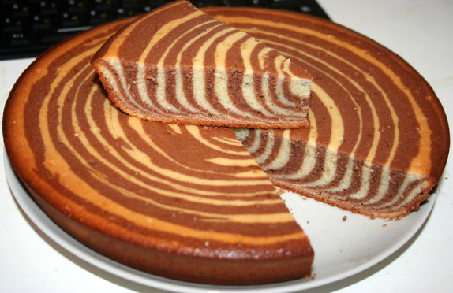

Пирог «Зебра»

Пирог «Зебра» правильнее было бы назвать «Тигром» — классическое яичное бисквитное тесто при запекании приобретает характерный желтоватый оттенок, и контрастные шоколадные разводы в срезе готового коржа напоминают скорее шкуру амурских или индокитайских хищных кошек, а вовсе даже не зебр.
Ингредиенты
- Сахар 2 стакана
- Яйцо куриное 5 штук
- Масло сливочное 200 г
- Сметана 1 стакан
- Мука пшеничная 2 стакана
- Какао-порошок 2 столовые ложки
- Сода гашеная 1 чайная ложка
Инструкция
- Яйца взбить с сахаром до белой пены. Добавить 2 стакана просеянной муки, соду, растопленное остывшее сливочное масло, сметану и тщательно перемешать (лучше миксером).
- Тесто разделить на две равные части. В одну часть добавить 2 столовые ложки муки, в другую 2 столовые ложки какао. Перемешать, чтобы не было комочков. Тесто должно быть консистенции негустой сметаны.
- Широкую форму (26–28 см), смазать маслом. Вливать в центр поочередно небольшие порции разного теста (по столовой ложке). Не перемешивать.
- Выпекать в предварительно разогретой духовке при температуре 200 градусов в течение получаса. Если верх пирога уже пропечется, а середина еще нет — следует накрыть пирог фольгой, уменьшить температуру до 180 градусов и выпекать до готовности.